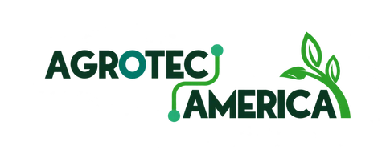
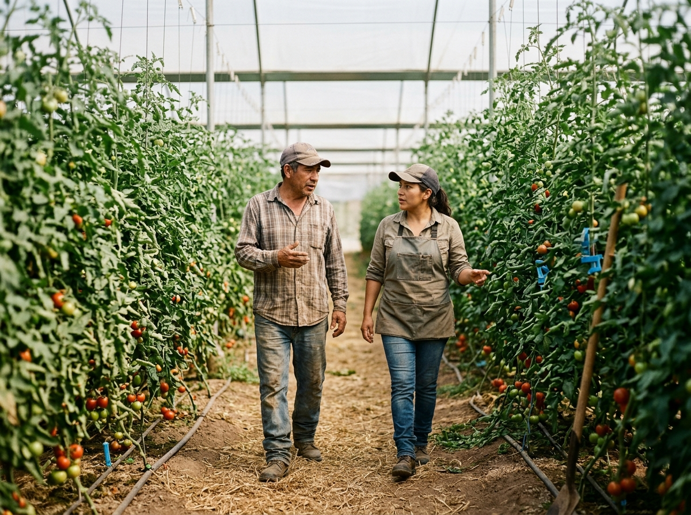
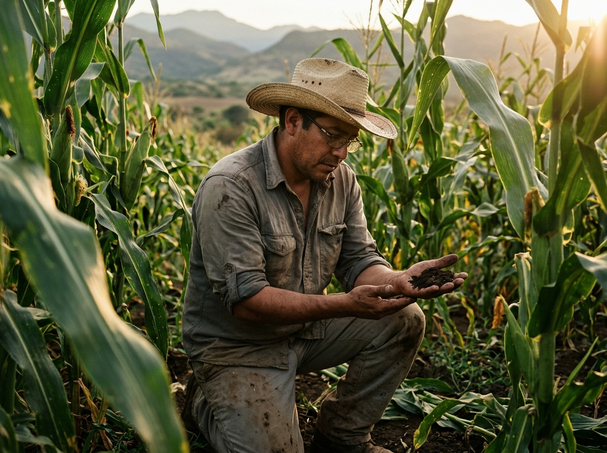
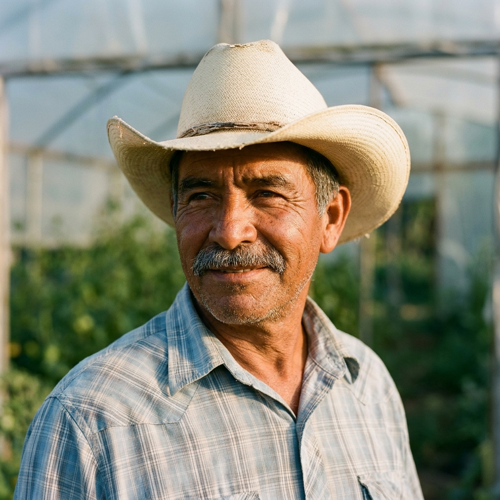
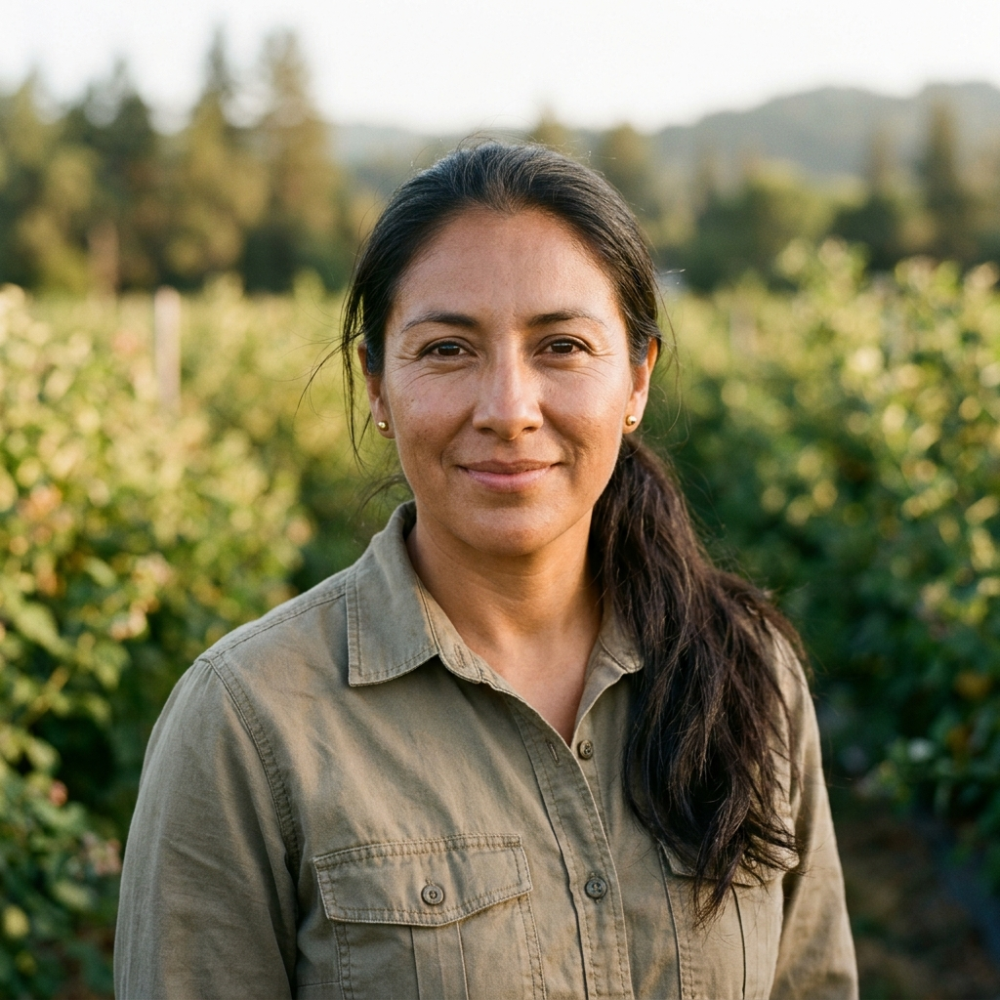
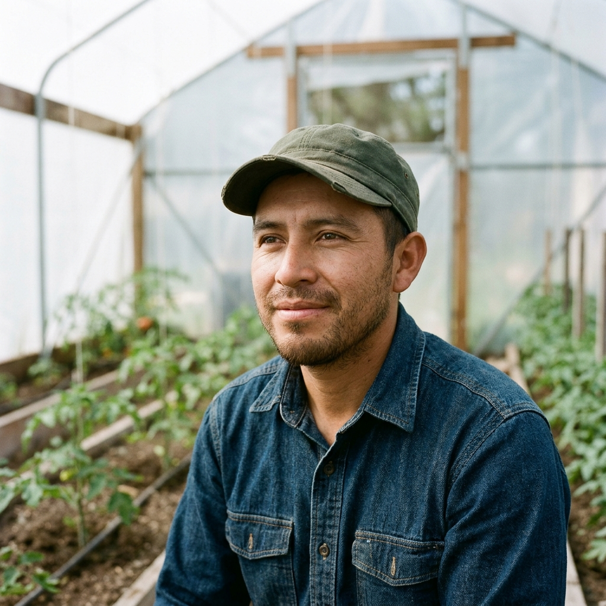

Clases en video
23 cursos, 103 clases con casos reales de productores mexicanos. Baja en tu celular y entra cuando puedas.

Entrar al clubFormación agrícola curada por productores mexicanos. Casos reales, herramientas del día a día y una comunidad hecha para quienes trabajan la tierra.
Desde invernaderos de hortalizas hasta cultivos de cacao, hacemos la formación del campo más clara, útil y conectada con lo que vives en tu propia parcela, con apoyo continuo.
Clases con productores que ya puso las manos en la tierra. No teoría de aula.
Seis calculadoras, bitácora de parcelas y conversor agrícola. Todo en un solo lugar.
Conecta con productores, asesores e investigadores en el directorio técnico.
Desde invernadero y riego hasta inocuidad y agroindustria, descubre por dónde empezar tu formación.
Entrar a AgroTec es entrar a todo un sistema. Las clases son el inicio: después vienen las herramientas que te acompañan al surco.
23 cursos, 103 clases con casos reales de productores mexicanos. Baja en tu celular y entra cuando puedas.
Densidad, lámina de riego, aporte de fertilizante, punto de equilibrio, mezcla y conversor. La cuenta en tu idioma.
Registra ciclos, siembras, riegos, aplicaciones, cosechas. Compara temporadas y aprende de tu propio campo.
Conecta con productores, asesores, encargados e investigadores. Publica una oportunidad o encuentra talento.
Rayo Rural, Detective Agrícola, Semillas de Memoria. Resuelve, acumula y canjea por material técnico.
Guías técnicas descargables en PDF y certificados verificables al terminar cada curso. Súbelo a LinkedIn.
Elige la ruta que mejor se adapta a tu campo, tu ritmo y tu objetivo.


Entra al club, revisa el catálogo y escoge el curso con el que quieras comenzar.
Responde 7 preguntas rápidas y recibes una ruta de aprendizaje a tu medida.
Usa las calculadoras y la bitácora para llevar lo aprendido directo al campo.
Productores, técnicos, estudiantes y emprendedores de todo México aprenden juntos, se cruzan dudas y comparten lo que les ha funcionado en el surco. Cada caso real que entra al club suma a los demás.
Las clases y las herramientas son solo el camino. Lo que importa es lo que pasa después, cuando llegan al campo con algo nuevo que probar.
Llevaba años con el mismo problema de sales en el suelo. Después del curso de suelos sódicos cambié la estrategia de lavado y en un ciclo bajé el conductividad un 40%.

La calculadora de fertilización me ha ahorrado horas de números. Y la bitácora me cambió la forma de llevar los ciclos — ahora puedo comparar temporadas de verdad.

Estoy empezando con mi propio invernadero. Las clases de hortalizas protegidas me ahorraron el aprender a golpes. Vale cada minuto.

No. Al entrar al club te hacemos una breve entrevista (menos de 3 minutos) para armarte una ruta personalizada según tu experiencia y lo que quieras aprender.
Sí. Al crear tu cuenta eliges un curso gratuito para comenzar, sin pago inicial. Así ves cómo funciona la plataforma y la calidad de las clases antes de ampliar.
Sí, sin preguntas. Entras a tu cuenta, cancelas desde el panel de Stripe y conservas el acceso hasta el final del periodo que ya pagaste.
Todo el club funciona en navegador móvil (iOS y Android), incluyendo la bitácora de parcelas y las calculadoras. No necesitas descargar nada.
Cada curso aprobado te da un certificado con tu nombre y un folio público verificable. Lo puedes compartir en LinkedIn o enviárselo a un empleador.
Puedes preguntar en el foro del club, buscar en el directorio técnico a alguien de tu zona o especialidad, o escribirnos directamente por WhatsApp desde el chat del landing.
Entra al club, elige tu primer curso gratis y empieza a aprender con quien ya puso las manos en la tierra. Sin pago inicial, sin compromiso.